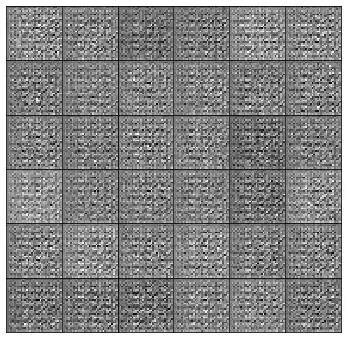

Künstliche Intelligenz
Eine Einführung
Lukas Hutter | 08.03.2024 | ARS Seminar "KI im HR-Management"
Handouts zu den Slides
Wissenschaftler
Lehrer
Data Analyst, Visualiser & Consultant
Gründer von
Biotop Wissenschaftskollektiv
2012-2016
Systembiologie | University of Oxford
2005-2012
MSc in Analytischer Chemie | TU Graz
Geschichte
1950
Turing Test

1951
SNARC
Marvin Minsky baut das erste, damals noch analoge, neuronale Netzwerk, in dem virtuelle Ratten durch ein Labyrinth navigieren
1956
Dartmouth Conference
Grundbegriffe
Modell
die trainierte Version eines Lernalgorithmus

Künstliche Intelligenz (K.I. oft auch A.I.) ist jenes Teilgebiet der Computerwissenschaften, welches sich kognitiven Aufgabenstellungen - wie beispielsweise dem Lernen, dem Lösen genereller und spezifischer Probleme, und dem Erkennen von Mustern - widmet, deren Lösung normalerweise menschliche Intelligenz velangt.
Typen künstlicher Intelligenz
Narrow/ Weak AI
spezifische Probleme: Voice Assistants, Bilderkennung, Empfehlungssysteme
General AI / Strong AI
Verstehen, Lernen, Wissen kontextunabhängig Einsetzen
Machine Learning

Lernansätze im ML
 Source: MathWorks
Source: MathWorks
Support Vector Machines (SVMs)
 Source: The Hash Pi
Source: The Hash Pi
Entscheidungsbäume & Random Forests

Deep Learning
Animation: 3Blue1Brown

Backpropagation
Animation: 3Blue1Brown
Convolutional Neural Networks
Animation: Wikipedia
{kind=link}

Convolutional Neural Networks
Source: Hoeser & Kuenzer 2020 Remote SensingRecurrent Neural Networks
Source: Towards Data ScienceGenerative AI
 Source: vitalflux.com
Source: vitalflux.com
 Source: vitalflux.com
Source: vitalflux.com
Generative Adversarial Networks
Goodfellow et al. 2014
 Source: Thalles' blog
Source: Thalles' blog
Generative Adversarial Networks
Goodfellow et al. 2014
Large Language Models
Generative AI Systeme, die Sprache als Input (Prompt) und/oder Output verwenden
GPT, LamDA, DALL-E, MidjourneyWie geht AI mit Sprache um?
Embedding

Transformer Architektur
Vaswani et al. 2017
Attention System
Vaswani et al. 2017

Generative Pre-trained Transformer (GPT)
- basiert auf modifizierter Transformer Architektur und riesigen Trainingsdatenmengen
- Mehrstufiger Lernprozess: Self-Supervised & Supervised
- GPT-4 (2023)
- etwa 1 Billion Parameter (10x vs GPT-3)
- Embedding: mehr als 12000 Dimensionen
- kann 25000 Wörter auf einmal verarbeiten (8x vs GPT-3)
- mutlimodal: "versteht" Text und Bilder
- kann sich an 64000 Wörter in einer Konversation erinnern (8x vs GPT-3.5)